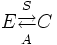
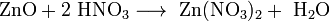
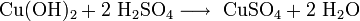
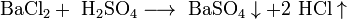
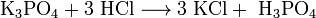
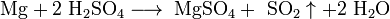
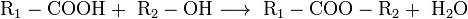

|
|
 |
« : 27 Август 2009, 00:02:40 » |
|
Химия (от араб. , предположительно от египетского «chemi» — черный, откуда также греческое название Египта, чернозёма и свинца — «черная земля»; другие возможные варианты: др.-греч. — «сок», «эссенция», «влага», «вкус», др.-греч. — «сплав (металлов)», «литье», «поток», др.-греч. — «смешивание», др.-греч. — «Химера») — одна из важнейших и обширных областей естествознания, наука о веществах, их свойствах, строении и превращениях, происходящих в результате химических реакций. Поскольку все вещества состоят из атомов, которые благодаря химическим связям способны формировать молекулы, то химия занимается в основном изучением взаимодействий между атомами и молекулами, полученными в результате таких взаимодействий.
Предмет химии — химические элементы и их соединения, а также закономерности, которым подчиняются различные химические реакции. Химию иногда называют [1] центральной наукой из-за ее особого положения среди естественных наук. Она соединяет физико-математические и биолого-социальные науки. Это делает химию "наукой-гигантом". Современная химия является самой обширной среди всех естественных наук.
|
|
|
|
« Последнее редактирование: 03 Март 2013, 01:40:33 от ФхФ »
|
|
|
|
|
|
|
« Ответ #1 : 27 Август 2009, 00:05:04 » |
|
ИСТОРИЯ ХИМИИ
Зачатки химии возникли ещё со времён появления человека разумного. Поскольку человек всегда так или иначе имел дело с химическими веществами, то его первые эксперименты с огнём, дублением шкур, приготовлением пищи можно назвать зачатками практической химии. Постепенно практические знания накапливались, и в самом начале развития цивилизации люди умели готовить некоторые краски, эмали, яды и лекарства. Вначале человек использовал биологические процессы, такие, как брожение, гниение, но с освоением огня начал использовать процессы горения, спекания, сплавления. Использовались окислительно-восстановительные реакции, не протекающие в живой природе — например, восстановление металлов из их соединений. Ещё в VIII тыс. до н. э. славяне получали металлы. Такие ремёсла, как металлургия, керамика, стеклоделие, крашение, парфюмерия, косметика, достигли значительного развития ещё до начала нашей эры. Например, состав современного бутылочного стекла практически не отличается от состава стекла, применявшегося в 4000 году до н. э. в Египте. Хотя химические знания тщательно скрывались жрецами от непосвящённых, они всё равно медленно проникали в другие страны. К европейцам химическая наука попала главным образом от арабов после завоевания ими Испании в 711 году. Они называли эту науку «алхимией», от них это название распространилось и в Европе.
Известно, что в Египте уже в 3000 году до н. э. умели получать медь из её соединений, используя уголь в качестве восстановителя, а также получали серебро и свинец. Постепенно в Египте и Месопотамии было развито производство бронзы, а в северных странах — железа. Делались также теоретические находки. Например, в Китае с XXII века до н. э. существовала теория об основных элементах (вода, огонь, дерево, золото, земля). В Месопотамии возникла идея о противоположностях, из которых построен мир: огонь-вода, тепло-холод, сухость-влажность и т. д.
В V веке до н. э. в Греции Левкипп и Демокрит развили теорию о строении вещества из атомов. По аналогии со строением письма они заключили, что как речь делится на слова, а слова состоят из букв, так и все вещества состоят из определенных соединений (молекул), которые в свою очередь состоят из неделимых элементов (атомов).
В V веке до н. э. Эмпедокл предложил считать основными элементами (стихиями) воду, огонь, воздух и землю. В IV веке до н. э. Платон развил учение Эмпедокла: каждому из этих элементов соответствовал свой цвет и своя правильная пространственная фигура атома, определяющая его свойства: огню — красный цвет и тетраэдр, воде — синий и икосаэдр, земле — зелёный и гексаэдр, воздуху — жёлтый и октаэдр. По мнению Платона, именно из комбинаций этих «кирпичиков» и построен весь материальный мир. Учение о четырёх превращающихся друг в друга было унаследовано Аристотелем.
|
|
|
|
« Последнее редактирование: 03 Март 2013, 01:40:59 от ФхФ »
|
|
|
|
|
|
|
« Ответ #2 : 27 Август 2009, 00:06:02 » |
|
АЛХИМИЯ
В IV—III веках до н. э. в Азии определилась наука алхимия, в которой соединились философские представления и ремесленные навыки того времени, а также магические и мистические представления. Были найдены новые элементы, такие как ртуть, сера, фосфор, охарактеризованы многие соли, уже были известны и использовались кислота HNO3 и щёлочь NaOH. Известными алхимиками того времени были Джабир ибн Хайян (Гебер), Ибн Сина (Авиценна) и Абу-ар-Рази.
В VII веке н. э. алхимия проникла в Европу. В то время особой популярностью пользовались предметы роскоши, в особенности золото, поскольку именно они служили в основном для торговли с Азией. Алхимиков интересовал способ получения золота из других металлов, а также проблема обработки металлов, то есть, практические аспекты. Вместе с тем арабская алхимия стала отдаляться от практики и утратила популярность. Из-за особенностей производства и распространения знаний (только от отца к сыну) алхимия развивалась очень медленно. Наиболее известными европейскими алхимиками считаются Роджер Бэкон и Раймонд Луллий. Только в XVI веке, из-за необходимости развития металлургии (Агрикола) и медицины (Парацельс) был сделан скачок в этой науке.
|
|
|
|
« Последнее редактирование: 03 Март 2013, 01:41:12 от ФхФ »
|
|
|
|
|
|
|
« Ответ #3 : 27 Август 2009, 00:08:00 » |
|
Химия как наука
Химия как наука определилась в XVI—XVII веках, после ряда научных открытий, обосновавших механистическую картину мира, развития промышленности, создания фабрик, появления буржуазного общества. Однако из-за того, что химия, в отличие от физики, не могла быть выражена количественно, существовали споры, является ли химия количественной воспроизводимой наукой или это некий иной вид познания. В 1661 году Роберт Бойль создал труд «Химик-скептик», в котором объяснил разность свойств различных веществ тем, что они построены из разных частиц (корпускул), которые и отвечают за свойства вещества. Ван Гельмонт, изучая горение, ввёл понятие газ для вещества, которое образуется при нём, открыл углекислый газ. В 1672 году Бойль открыл, что при обжиге металлов их масса увеличивается, и объяснил это захватом «весомых частиц пламени».
М. В. Ломоносов уже в первой известной своей работе, именно к данной области естествознания отношение имеющей — «Элементы математической химии» (1741), в отличие от большинства химиков своего времени, считавших эту сферу деятельности искусством, классифицирует её как науку, начиная труд свой словами [2]:
Химия — наука об изменениях, происходящих в смешанном теле, поскольку оно смешанное. ...Не сомневаюсь, что найдутся многие, которым это определение покажется неполным, будут сетовать на отсутствие начал разделения, соединения, очищения и других выражений, которыми наполнены почти все химические книги; но те, кто проницательнее, легко усмотрят, что упомянутые выражения, которыми весьма многие писатели по химии имеют обыкновение обременять без надобности свои исследования, могут быть охвачнеы одним словом: смешанное тело. В самом деле, обладающий знанием смешанного тела может объяснить все возможные изменения его, и в том числе разделение, соединение и т. д.
|
|
|
|
« Последнее редактирование: 03 Март 2013, 01:41:34 от ФхФ »
|
|
|
|
|
|
|
« Ответ #4 : 27 Август 2009, 00:09:04 » |
|
Тепло и флогистон. Газы
В начале XVIII века Шталь сформулировал теорию флогистона — вещества, удаляющегося из материалов при их горении.
В 1749 году М. В. Ломоносов написал «Размышления о причине теплоты и холода» (замысел работы относится к 1742—1743 годам — см. его же «Заметки по физике и корпускулярной философии»). Высочайшую оценку этому труду дал Л. Эйлер (письмо 21 ноября 1747 года). В 1848 году профессор Д. М. Перевощиков, обстоятельно излагая важнейшие идеи М. В. Ломоносова, подчёркивает, что его теория теплоты опередила науку на полстолетия («Современник», январь 1848, т. VII, кн. 1, отд. II, с. 41—58) — с мнением этим, до того и в дальнейшем, согласуется мнение многих других исследователей. [2]
В 1754 году Блэк открыл углекислый газ, Пристли в 1774 — кислород, а Кавендиш в 1766 — водород.
В период 1740—1790 годов Лавуазье и Ломоносов [2] химически объяснили процессы горения, окисления и дыхания, доказали, что огонь — не вещество, а следствие процесса. Пруст в 1799—1806 годах сформулировал закон постоянства состава. Гей-Люссак в 1808 открыл закон объёмных отношений (закон Авогадро). Дальтон в труде «Новая система химической философии» (1808—1827) доказал существование атомов, ввёл понятие атомный вес, элемент — как совокупность одинаковых атомов.
|
|
|
|
« Последнее редактирование: 03 Март 2013, 01:41:47 от ФхФ »
|
|
|
|
|
|
|
« Ответ #5 : 27 Август 2009, 00:10:13 » |
|
Реинкарнация атомарной теории вещества
В 1811 году Авогадро и предложил гипотезу о том, что молекулы элементарных газов состоят из двух одинаковых атомов; позднее на основе этой гипотезы Канниццаро осуществил реформу атомно-молекулярной теории.
В 1869 году, Д. И. Менделеев открыл периодический закон химических элементов и создал периодическую систему химических элементов. Он объяснил понятие химический элемент и показал зависимость атомной массы от свойств элемента. Открытием этого закона он основал химию как количественную науку, а не только как описательную качественную
|
|
|
|
« Последнее редактирование: 03 Март 2013, 01:42:04 от ФхФ »
|
|
|
|
|
|
|
« Ответ #6 : 27 Август 2009, 00:11:32 » |
|
Радиоактивность и спектры
Важную роль в познании структуры вещества сыграли открытия XIX века. Исследование тонкой структуры эмиссионных спектров и спектров поглошения натолкнуло ученых на мысль о их связи со строением атомов веществ. Открытие радиоактивности показало, что некоторые атомы нестабильны, изотопы и могут самопроизвольно превращаться в новые атомы (радон — «эманация»).
|
|
|
|
« Последнее редактирование: 03 Март 2013, 01:42:17 от ФхФ »
|
|
|
|
|
|
|
« Ответ #7 : 27 Август 2009, 00:14:11 » |
|
Основные понятия
Элементарная частица
Основная статья: Элементарная частица
Это все частицы, не являющиеся атомными ядрами или атомами (протон — исключение). В узком смысле — частицы, которые нельзя считать состоящими из других частиц (при заданной энергии воздействия/наблюдения).
Атом
Основная статья: Атом
Наименьшая частица химического элемента, обладающая всеми его свойствами. Атом состоит из ядра и «облака» электронов вокруг него. Ядро состоит из положительно заряженных протонов и нейтральных нейтронов. Взаимодействуя, атомы могут образовывать молекулы.
Атом — предел химического разложения любого вещества. Простое вещество (если оно не является одноатомным, как, например, гелий He) разлагается на атомы одного вида, сложное вещество — на атомы разных видов.
Атомы неделимы химическим путем.
Молекула
Основная статья: Молекула
Частица, состоящая из двух или более атомов, которая может самостоятельно существовать. Имеет постоянный качественный и количественный состав. Её свойства зависят от атомов, входящих в её состав, и от характера связей между ними, и от их пространственного расположения (изомеры). Может иметь несколько разных состояний и переходить от одного состояния к другому под действием внешних факторов. Свойства вещества, состоящего из определённых молекул, зависят от состояния молекул и от свойств молекулы.
Вещество
Основная статья: Вещество
В соответствии с классическими научными воззрениями различаются две физические формы существования материи — вещество и поле. Вещество — это форма материи, обладающая массой покоя (масса покоя не равна нулю). Все вещества корпускулярны. Химия изучает большей частью вещества, организованные в атомы, молекулы, ионы и радикалы. Те, в свою очередь, состоят из элементарных частиц: электронов, протонов, нейтронов и т. д.
Простые и сложные вещества. Химические элементы
Среди чистых веществ принято различать простые (состоящие из одного химического элемента) и сложные (образованы несколькими химическими элементами) вещества.
Простые вещества следует отличать от понятий «атом» и «химический элемент».
Химический элемент — это вид атомов с определенным положительным зарядом ядра. Все химические элементы указаны в Периодической системе элементов Д. И. Менделеева; каждому элементу отвечает свой порядковый (атомный) номер в Периодической системе. Значение порядкового номера элемента и значение заряда ядра атома того же элемента совпадают, то есть химический элемент — это совокупность атомов с одинаковым порядковым номером.
Основная статья: Химический элемент
Простые вещества представляют собой формы существования химических элементов в свободном виде; каждому элементу соответствует, как правило, несколько простых веществ (аллотропных форм), которые могут различаться по составу, например атомный кислород O, кислород O2 и озон O3, или по кристаллической решетке, например алмаз и графит для элемента углерод C. Очевидно, что простые вещества могут быть одно- и многоатомными.
Сложные вещества иначе называются химическими соединениями. Этот термин означает, что вещества могут быть получены с помощью химических реакций соединения из простых веществ (химического синтеза) или разделены на элементы в свободном виде (простые вещества) с помощью химических реакций разложения (химического анализа).
Простые вещества представляют собой конечные формы химического разложения сложных веществ. Сложные вещества, образующиеся из простых веществ, не сохраняют химические свойства составляющих веществ.
Суммируя все сказанное выше, можно записать:

где
E — простые вещества (элементы в свободном виде),
C — сложные вещества (химические соединения),
S — синтез,
A — анализ.
В настоящее время понятия «синтез» и «анализ» химических веществ используются в более широком смысле. К синтезу относят любой химический процесс, который приводит к получению необходимого вещества и при этом существует возможность его выделения из реакционной смеси. Анализом считается любой химический процесс, позволяющий определить качественный и количественный состав вещества или смеси веществ, то есть установить, из каких элементов составлено данное вещество и каково содержание каждого элемента в этом веществе. Соответственно различают качественный и количественный анализ — две составные части одной из химических наук — аналитической химии.
|
|
|
|
« Последнее редактирование: 03 Март 2013, 01:42:30 от ФхФ »
|
|
|
|
|
|
|
« Ответ #8 : 27 Август 2009, 00:20:57 » |
|
продолжение "Основные понятия"
Металлы и неметаллы
Все химические элементы по их свойствам, то есть свойствам свободных атомов и свойствам образуемых элементами простых и сложных веществ, делят на металлические и неметаллические элементы. Условно к неметаллам относят элементы He, Ne, Ar, Кг, Xe, Rn, F, Cl, Br, I, At, O, S, Se, Te, N, P, As, C, Si, B и H, а остальные элементы считаются металлами.
чистые вещества и смеси веществ
Индивидуальное чистое вещество обладает определенным набором характеристических свойств. От чистых веществ следует отличать смеси веществ, которые могут состоять из двух или большего числа чистых веществ, сохраняющих присущие им свойства.
Смеси веществ делятся на гомогенные (однородные) и гетерогенные (неоднородные).
|
|
|
|
« Последнее редактирование: 03 Март 2013, 01:42:53 от ФхФ »
|
|
|
|
|
|
|
« Ответ #9 : 27 Август 2009, 00:22:37 » |
|
Различные примеры возможных смесей веществ в разных агрегатных состоянияхАгрегатное состояние составных частей
(гетерогенная система)
Твердое — твердое Твердые растворы, сплавы (например латунь, бронза) Горные породы (например гранит, минералосодержащие руды и др.)
Твердое — жидкое Жидкие растворы (например водные растворы солей) Твердое в жидком — суспензии или взвеси (например частицы глины в воде, коллоидные растворы)
Жидкое в твердом — жидкость в пористых телах (например почвы, грунты)
Твердое — газообразное Хемосорбированный водород в платине, палладии, сталях Твердое в газообразном — порошки, аэрозоли, в том числе дым, пыль, смог
Газообразное в твердом — пористые материалы (например кирпич, пемза)
Жидкое — твердое Твердые жидкости (например стекло — твердое, но все же жидкость) Можнет принимать разную форму и фиксировать ее (например посуда — разной формы и цвета)
Жидкое — жидкое Жидкие растворы (например уксус — раствор уксусной кислоты в воде) Двух- и многослойные жидкие системы, эмульсии (например молоко — капли жидкого жира в воде)
Жидкое — газообразное Жидкие растворы (например раствор диоксида углерода в воде) Жидкое в газообразном — аэрозоли жидкости в газе, в том числе туманы
Газообразное в жидком — пены (например мыльная пена)
Газообразное — газообразное Газовые растворы (смеси любых количеств и любого числа газов) Гетерогенная система невозможна
|
|
|
|
« Последнее редактирование: 03 Март 2013, 01:43:03 от ФхФ »
|
|
|
|
|
|
|
« Ответ #10 : 27 Август 2009, 00:25:59 » |
|
В гомогенных смесях составные части нельзя обнаружить ни визуально, ни с помощью оптических приборов, поскольку вещества находятся в раздробленном состоянии на микроуровне. Гомогенными смесями являются смеси любых газов и истинные растворы, а также смеси некоторых жидкостей и твердых веществ, например сплавы.
В гетерогенных смесях либо визуально, либо с помощью оптических приборов можно различить области (агрегаты) разных веществ, разграниченные поверхностью раздела; каждая из этих областей внутри себя гомогенна. Такие области называются фазой.
Гомогенная смесь состоит из одной фазы, гетерогенная смесь состоит из двух или большего числа фаз.
Гетерогенные смеси, в которых одна фаза в виде отдельных частиц распределена в другой, называются дисперсными системами. В таких системах различают дисперсионную среду (распределяющую среду) и дисперсную фазу (раздробленное в дисперсионной среде вещество).
С помощью физических методов разделения можно провести разделение смесей на их составные части, то есть на чистые вещества.
|
|
|
|
« Последнее редактирование: 03 Март 2013, 01:43:15 от ФхФ »
|
|
|
|
|
|
|
« Ответ #11 : 27 Август 2009, 00:39:46 » |
|
 Чистыми веществами называются вещества, которые при проведении физических методов не разделяются на два или более других веществ и не изменяют своих физических свойств. В природе не существует абсолютно чистых веществ. Например, так называемый особо чистый алюминий все еще содержит 0,001 % примесей других веществ. Таким образом, абсолютно чистое вещество — это абстракция. Правда, когда речь идет о каком-либо веществе, то химия пользуется этой абстракцией, то есть считает, что вещество истинно чистое, хотя практически берется вещество с некоторым содержанием примесей. Конечно, химик должен стремиться использовать в своей практике по возможности чистые вещества, содержащие минимальное количество примесей. Следует учитывать, что даже незначительное содержание примесей может существенно изменить химические свойства вещества. Различия между смесями веществ и сложными веществамиСМЕСЬ: Образуется с помощью физического процесса (смешивание чистых веществ) Свойства чистых веществ, из которых составлена смесь, остаются неизменными Чистые вещества (простые и сложные) могут находиться в смеси в любом массовом соотношении Может быть разделена на составные части (чистые вещества) с помощью физических методов СЛОЖНОЕ ВЕЩЕСТВО: Образуется с помощью химической реакции (синтез из простых веществ) Свойства простых веществ, из которых получено сложное вещество, в последнем не сохраняются Элементы, входящие в состав сложного вещества, всегда находятся в определенном массовом отношении Может быть разложено на составные части (элементы в виде простых веществ) только с помощью химической реакции (анализ) ИонОсновная статья: Ион Это заряженная частица, атом или молекула, которая имеет неодинаковое количество протонов и электронов. Если у частицы больше электронов, чем протонов, то она заряжена отрицательно и называется анион. Например — Cl-. Если в частице электронов меньше, чем протонов, значит, она заряжена положительно и называется катион. Например — Na+.
РадикалОсновная статья: Радикал Это частица (атом или молекула), содержащая один или несколько неспаренных электронов. В большинстве случаев химическая связь образуется при участии двух электронов. Частица, имеющая неспаренный электрон, очень активна и легко образует связи с другими частицами. Поэтому время жизни радикала в среде, как правило, очень мало. См.также о свободных радикалах при радиолизе в радиобиологии.
Химическая связьОсновная статья: Химическая связь удерживает атомы или группы атомов друг около друга. Различают несколько видов химической связи: ионную, ковалентную (полярную и неполярную), металлическую, водородную. Периодический законОсновная статья: Периодический закон Открыт Д. И. Менделеевым 1 марта 1869 года. Современная формулировка: Свойства элементов, а также образуемых ими соединений находятся в периодической зависимости от зарядов ядер их атомов.
Химические реакцииОсновная статья: Химические реакции Процессы, протекающие в химическом веществе, или в смесях различных веществ, представляют собой химические реакции. При протекании химических реакций всегда образуются новые вещества. В сущности это процесс изменения структуры молекулы. В результате реакции количество атомов в молекуле может увеличиваться (синтез), уменьшаться (разложение) или оставаться постоянным (изомеризация, перегруппировка). В ходе реакции изменяются связи между атомами и порядок размещения атомов в молекулах. Химические реакции выявляют и характеризуют химические свойства данного вещества. Исходные вещества, взятые для проведения химической реакции, называются реагентами, а новые вещества, образующиеся в результате химической реакции, — продуктами реакции. В общем виде химическая реакция изображается так: Реагенты ? Продукты Химия изучает и описывает эти процессы как в макромасштабе, на уровне макроколичеств веществ, так и в микромасштабе, на атомно-молекулярном уровне. Внешние проявления химических процессов, протекающих в макромасштабе, нельзя непосредственно перенести на микроуровень взаимодействия веществ и однозначно их интерпретировать, однако такие переходы возможны при правильном использовании специальных химических законов, присущих только микрообласти (атомам, молекулам, ионам, взятым в единичных количествах). НоменклатураОсновная статья: Химическая номенклатура Это свод правил наименования химических соединений. Поскольку общее число известных соединений больше 20 млн, и их число принципиально неограниченно, необходимо пользоваться чёткими правилами при их наименовании, чтобы по названию можно было воспроизвести их структуру. Существует несколько вариантов наименования органических и неорганических соединений, но стандартом считается номенклатура IUPAC. |
|
|
|
« Последнее редактирование: 03 Март 2013, 01:43:44 от ФхФ »
|
|
|
|
|
|
|
« Ответ #12 : 27 Август 2009, 00:43:38 » |
|
Разделы химии
Современная химия — настолько обширная область естествознания, что многие её разделы по существу представляют собой самостоятельные, хотя и тесно взаимосвязанные научные дисциплины.
По признаку изучаемых объектов (веществ) химию принято делить на неорганическую и органическую. Объяснением сущности химических явлений и установлением их общих закономерностей на основе физических принципов и экспериментальных данных занимается физическая химия, включающая квантовую химию, электрохимию, химическую термодинамику, химическую кинетику. Самостоятельными разделами являются также аналитическая и коллоидная химия (см. ниже перечень разделов).
Технологические основы современных производств излагает химическая технология — наука об экономичных методах и средствах промышленной химической переработки готовых природных материалов и искусственного получения химических продуктов, не встречающихся в окружающей природе.
Сочетание химии с другими смежными естественными науками представляют собой биохимия, биоорганическая химия, геохимия, радиационная химия, фотохимия и др.
Общенаучные основы химических методов разрабатываются в теории познания и методологии науки.
Агрохимия
Аналитическая химия занимается изучением веществ с целью получить представление об их химическом составе и структуре, в рамках этой дисциплины ведётся разработка экспериментальных методов химического анализа.
Биохимия изучает химические вещества, их превращения и явления, сопровождающие эти превращения в живых организмах. Тесно связана с органической химией, химией лекарственных средств, нейрохимией, молекулярной биологией и генетикой.
Вычислительная химия; компьютерная химия; математическая химия
Геохимия — наука о химическом составе Земли и планет (космохимия), законах распределения элементов и изотопов, процессах формирования горных пород, почв и природных вод.
Квантовая химия
Коллоидная химия
Материаловедение
Металлоорганическая химия
Неорганическая химия изучает свойства и реакции неорганических соединений. Чёткой границы между органической и неорганической химии нет, напротив, существуют дисциплины на стыке этих наук, например, металлоорганическая химия.
Органическая химия выделяет в качестве предмета изучения вещества, построенные на основе углеродного скелета.
Нейрохимия своим предметом имеет изучение медиаторов, пептидов, белков, жиров, сахара и нуклеиновых кислот, их взаимодействия и роли, которую они играют в формировании, становлении и изменении нервной системы.
Нефтехимия
Общая химия
Препаративная химия
Радиохимия
Супрамолекулярная химия
Фармацевтика
Физическая химия изучает физический и фундаментальный базис химических систем и процессов. Важнейшие области исследования включают химическую термодинамику, кинетику, электрохимию, статистическую механику и спектроскопию. Физическая химия имеет много общего с молекулярной физикой. Физическая химия предполагает использование инфинитезимального метода. Физическая химия является отдельной дисциплиной от химической физики.
Фотохимия
Химия высокомолекулярных соединений
Химия одноуглеродных молекул
Химия полимеров
Химия почв
Теоретическая химия своей задачей ставит теоретическое обобщение и обоснование знаний химии через фундаментальные теоретические рассуждения (как правило, в области математики или физики).
Термохимия
Токсикологическая химия
Электрохимия
Экологическая химия; химия окружающей среды
Ядерная химия изучает ядерные реакции и химические последствия ядерных реакций.
|
|
|
|
« Последнее редактирование: 03 Март 2013, 01:43:59 от ФхФ »
|
|
|
|
|
|
|
« Ответ #13 : 27 Август 2009, 00:53:29 » |
|
НЕОРГАНИЧЕСКАЯ ХИМИЯ
делится на металлы и неметаллы
МЕТАЛЛЫ
Мета?лл (название происходит от лат. metallum — шахта) — группа элементов, обладающая характерными металлическими свойствами, такими как высокая тепло- и электропроводность, положительный температурным коэффициентом сопротивления, высокая пластичность и др. К металлам относятся примерно 70 % всех химических элементов
Нахождение в природе
Большая часть металлов присутствует в природе в виде руд и соединений. Они образуют оксиды, сульфиды, карбонаты и другие химические соединения. Для получения чистых металлов и дальнейшего их применения необходимо выделить их из руд и провести очистку. При необходимости проводят легирование и другую обработку металлов. Изучением этого занимается наука металлургия. Металлургия различает руды чёрных металлов (на основе железа) и цветных (в их состав не входит железо, всего около 70 элементов). Исключением можно назвать около 16 элементов: т. н. благородные металлы (золото, серебро и др.), и некоторые другие (например, ртуть, медь), которые присутствуют без примесей. Золото, серебро и платина относятся также к драгоценным металлам. Кроме того, в малых количествах они присутствуют в морской воде, растениях, живых организмах (играя при этом важную роль).
Известно, что организм человека на 3 % состоит из металлов. Больше всего в наших клетках кальция и натрия, сконцентрированного в лимфатических системах. Магний накапливается в мышцах и нервной системе, медь — в печени, железо — в крови.
Характерные свойства металлов
Металлический блеск (кроме йода и углерода в виде графита. Несмотря на свой металлический блеск, кристаллический йод и графит относятся к неметаллам.)
Хорошая электропроводность (кроме углерода.)
Возможность лёгкой механической обработки (см.: пластичность; однако, некоторые металлы, например германий и висмут, непластичны.)
Высокая плотность (обычно металлы тяжелее неметаллов.)
Высокая температура плавления (исключения: ртуть, галлий и щелочные металлы.)
Большая теплопроводность
В реакциях всегда являются восстановителями
Физические свойства металлов
Все металлы (кроме ртути) тверды при нормальных условиях. Однако твёрдость их различна. Так, щелочные металлы легко режутся кухонным ножом. Сталь же по твёрдости схожа с оконным стеклом. Такие металлы, как ванадий, вольфрам и хром легко царапают самую твёрдую сталь и стекло.
Температуры плавления лежат в диапазоне от ?39 °C (ртуть) до 3410 °C (вольфрам). Температура плавления большинства металлов (за исключением щелочных) высока, однако некоторые «нормальные» металлы, например олово и свинец, можно расплавить на обычной электрической или газовой плите.
В зависимости от плотности металлы делят на лёгкие (плотность 0,53 ? 5 г/см?) и тяжёлые (5 ? 22,5 г/см?). Самым лёгким металлом является литий (плотность 0.53 г/см?). Самый тяжёлый металл в настоящее время назвать невозможно, так как плотности осмия и иридия — двух самых тяжёлых металлов — почти равны (около 22.6 г/см? — ровно в два раза выше плотности свинца), а вычислить их точную плотность крайне сложно: для этого нужно полностью очистить металлы, ведь любые примеси снижают их плотность.
Большинство металлов пластичны, то есть металлическую проволоку можно согнуть, и она не сломается. Это происходит из-за смещения слоёв атомов металлов без разрыва связи между ними. Самыми пластичными являются золото, серебро и медь. Из золота можно изготовить фольгу толщиной 0.003 мм, которую используют для золочения изделий. Однако не все металлы пластичны. Проволока из цинка или олова хрустит при сгибании; марганец и висмут при деформации вообще почти не сгибаются, а сразу ломаются. Пластичность зависит и от чистоты металла; так, очень чистый хром весьма пластичен, но, загрязнённый даже незначительными примесями, становится хрупким и более твёрдым.
Все металлы хорошо проводят электрический ток; это обусловлено наличием в их кристаллических решётках подвижных электронов, перемещающихся под действием электрического поля. Серебро, медь и алюминий имеют наибольшую электропроводность; по этой причине последние два металла чаще всего используют в качестве материала для проводов. Очень высокую электропроводность имеет также натрий, в экспериментальной аппаратуре известны попытки применения натриевых токопроводов в форме тонкостенных труб из нержавеющей стали, заполненных натрием. Благодаря малому удельному весу натрия, при равном сопротивлении натриевые «провода» получаются значительно легче медных и даже несколько легче алюминиевых.
Высокая теплопроводность металлов также зависит от подвижности свободных электронов. Поэтому ряд теплопроводностей похож на ряд электропроводностей и лучшим проводником тепла, как и электричества, является серебро. Натрий также находит применение как хороший проводник тепла; широко известно, например, применение натрия в клапанах автомобильных двигателей для улучшения их охлаждения.
Гладкая поверхность металлов отражает большой процент света — это явление называется металлическим блеском. Однако в порошкообразном состоянии большинство металлов теряют свой блеск; алюминий и магний, тем не менее, сохраняют свой блеск и в порошке. Наиболее хорошо отражают свет алюминий, серебро и палладий — из этих металлов изготовляют зеркала. Для изготовления зеркал иногда применяется и родий, несмотря на его исключительно высокую цену: благодаря значительно большей, чем у серебра или даже палладия, твёрдости и химической стойкости, родиевый слой может быть значительно тоньше, чем серебряный.
Цвет у большинства металлов примерно одинаковый — светло-серый с голубоватым оттенком. Золото, медь и цезий соответственно жёлтого, красного и светло-жёлтого цвета.
Химические свойства металлов
На внешнем электронном слое у большинства металлов небольшое количество электронов (1-3), поэтому они в большинстве реакций выступают как восстановители (то есть «отдают» свои электроны)
1. Реакции с простыми веществами
С кислородом реагируют все металлы, кроме золота, платины. Реакция с серебром происходит при высоких температурах, но оксид серебра(II) практически не образуется, так как он термически неустойчив. В зависимости от металла на выходе могут оказаться оксиды, пероксиды, надпероксиды:
4Li + O2 = 2Li2O оксид лития
2Na + O2 = Na2O2 пероксид натрия
K + O2 = KO2 надпероксид калия
Чтобы получить из пероксида оксид, пероксид восстанавливают металлом:
Na2O2 + 2Na = 2Na2O
Со среднмими и малоактивными металлами реакция происходит при нагревании:
3Fe + 2O2 = Fe3O4
2Hg + O2 = 2HgO
2Cu + O2 = 2CuO
С азотом реагируют только самые активные металлы, при комнатной температуре взаимодействует только литий, образуя нитриды:
6Li + N2 = 2Li3N
При нагревании:
2AL + N2 = 2AlN
3Ca + N2 = Ca3N2
С серой реагируют все металлы, кроме золота и платины:
Железо взаимодействует с серой при нагревании, образуя сульфид:
Fe + S = FeS
С водородом реагируют только самые активные металлы, то есть металлы IA и IIA групп кроме Be. Реакции осуществляются при нагревании, при этом образуются гидриды. В реакциях металл выступает как восстановитель, степень окисления водорода ?1:
2Na + H2 = 2NaH
Mg + H2 = MgH2
С углеродом реагируют только наиболее активные металлы. При этом образуются ацетилениды или метаниды. Ацетилениды при взаимодествии с водой дают ацетилен, метаниды — метан.
2Na + 2C = Na2C2
Na2C2 + 2H2O = 2NaOH + C2H2
2Na + H2 = 2NaH
Легирование
Легирование — это введение в расплав дополнительных элементов, модифицирующих механические, физические и химические свойства основного материала.
|
|
|
|
« Последнее редактирование: 03 Март 2013, 01:44:11 от ФхФ »
|
|
|
|
|
|
|
« Ответ #14 : 27 Август 2009, 00:55:38 » |
|
Микроскопическое строение
Характерные свойства металлов можно понять, исходя из их внутреннего строения. Все они имеют слабую связь электронов внешнего энергетического уровня (другими словами, валентных электронов) с ядром. Благодаря этому созданная разность потенциалов в проводнике приводит к лавинообразному движению электронов (называемых электронами проводимости) в кристаллической решётке. Совокупность таких электронов часто называют электронным газом. Вклад в теплопроводность, помимо электронов, дают фононы (колебания решётки). Пластичность обусловлена малым энергетическим барьером для движения дислокаций и сдвига кристаллографических плоскостей. Твёрдость можно объяснить большим числом структурных дефектов (междоузельные атомы, вакансии и др.).
Из-за лёгкой отдачи электронов возможно окисление металлов, что может приводить к коррозии и дальнейшей деградации свойств. Способность к окислению можно узнать по стандартному ряду активности металлов. Этот факт подтверждает необходимость использования металлов в комбинации с другими элементами (сплав, важнейшим из которых является сталь), их легирование и применение различных покрытий.
Для более корректного описания электронных свойств металлов необходимо использовать квантовую механику. Во всех твёрдых телах с достаточной симметрией уровни энергии электронов отдельных атомов перекрываются и образуют разрешённые зоны, причём зона, образованная валентными электронами, называется валентной зоной. Слабая связь валентных электронов в металлах приводит к тому, что валентная зона в металлах получается очень широкой, и всех валентных электронов не хватает для её полного заполнения.
Принципиальная особенность такой частично заполненной зоны состоит в том, что даже при минимальном приложенном напряжении в образце начинается перестройка валентных электронов, т. е. течёт электрический ток.
Та же высокая подвижность электронов приводит и к высокой теплопроводности, а также к способности зеркально отражать электромагнитное излучение (что и придаёт металлам характерный блеск).
|
|
|
|
« Последнее редактирование: 03 Март 2013, 01:44:24 от ФхФ »
|
|
|
|
|
|
|
« Ответ #15 : 27 Август 2009, 01:02:03 » |
|
Пример некоторых Металлов
Железо
Желе?зо — химический элемент с атомным номером 26 в периодической системе, обозначается символом Fe (лат. Ferrum), один из самых распространённых в земной коре металлов (второе место после алюминия).
Простое вещество железо (CAS-номер: 7439-89-6) — серебристо-белый, ковкий металл с высокой химической реакционной способностью: железо быстро корродирует при высоких температурах или при высокой влажности на воздухе. В чистом кислороде железо горит, а в мелкодисперсном состоянии самовозгорается и на воздухе.
На самом деле железом обычно называют его сплавы с малым содержанием примесей (до 0,8%), которые сохраняют мягкость и пластичность чистого металла. Но на практике чаще применяются сплавы железа с углеродом: сталь (до 2% углерода) и чугун (более 2% углерода), а так же нержавеющая (легированная) сталь с добавками легирующих металлов (хром, марганец, никель и др.). Совокупность специфических свойств железа и его сплавов делают его «металлом № 1» по важности для человека.
Железо редко встречается в природе в чистом виде, чаще, в составе железо-никелевых метеоритов. Распространённость железа в земной коре (4,65 %, 4-е место после O, Si, Al[2]). Считается также, что железо составляет бо?льшую часть земного ядра.
Геохимические свойства
Важнейшая геохимическая особенность железа — наличие у него нескольких степеней окисления. Железо в нейтральной форме — металлическое — слагает ядро земли, возможно, присутствует в мантии и очень редко встречается в земной коре. Закисное железо FeO — основная форма нахождения железа в мантии и земной коре. Окисное железо Fe2O3 характерно для самых верхних, наиболее окисленных, частей земной коры, в частности, осадочных пород.
По кристаллохимическим свойствам ион Fe2+ близок к ионам Mg2+ и Са2+ — другим главным элементам, составляющим значительную часть всех земных пород. В силу кристаллохимического сходства железо замещает магний и, частично, кальций во многих силикатах. При этом содержание железа в минералах переменного состава обычно увеличивается с уменьшением температуры.
Минералы железа
В земной коре железо распространено достаточно широко — на его долю приходится около 4,1 % массы земной коры (4-е место среди всех элементов, 2-е среди металлов). В мантии и земной коре железо сосредоточено главным образом в силикатах, при этом его содержание значительно в основных и ультраосновных породах, и мало — в кислых и средних породах.
Известно большое число руд и минералов, содержащих железо. Наибольшее практическое значение имеют красный железняк (гематит, Fe2O3; содержит до 70 % Fe), магнитный железняк (магнетит, FeFe2O4, Fe3О4; содержит 72,4 % Fe), бурый железняк или лимонит (гётит и гидрогётит, соответственно FeOOH и FeOOH·nH2O), а также шпатовый железняк (сидерит, карбонат железа(II), FeCO3; содержит около 48 % Fe). Гётит и гидрогётит чаще всего встречаются в корах выветривания, образуя так называемые «железные шляпы», мощность которых достигает несколько сотен метров. Также они могут иметь осадочное происхождение, выпадая из коллоидных растворов в озёрах или прибрежных зонах морей. При этом образуются оолитовые, или бобовые, железные руды. В них часто встречается вивианит Fe(3PO4)2·8H2O, образующий черные удлиненные кристаллы и радиально-лучистые агрегаты.
В природе также широко распространены сульфиды железа — пирит FeS2 (серный или железный колчедан) и пирротин. Они не являются железной рудой — пирит используют для получения серной кислоты, а пирротин часто содержит никель и кобальт.
По запасам железных руд Россия занимает первое место в мире. Содержание железа в морской воде — 1·10-5—1·10-8% железа.
Получение
В промышленности железо получают из железной руды, в основном из гематита (Fe2O3) и магнетита (Fe3O4).
Существуют различные способы извлечения железа из руд. Наиболее распространённым является доменный процесс.
Первый этап производства — восстановление железа углеродом в доменной печи при температуре 2000 °C. В доменной печи углерод в виде кокса, железная руда в виде агломерата или окатышей и флюс (например, известняк) подаются сверху, а снизу их встречает поток нагнетаемого горячего воздуха.
В печи углерод кокса окисляется до монооксида углерода (угарного газа) кислородом воздуха:
2C + O2 ? 2CO?.
В свою очередь, угарный газ восстанавливает железо из руды:
3CO + Fe2O3 ? 2Fe + 3CO2?.
Флюс добавляется для извлечения нежелательных примесей из руды, в первую очередь силикатов, таких, как кварц (диоксид кремния). Типичный флюс содержит известняк (карбонат кальция) и доломит (карбонат магния). Против других примесей используют другие флюсы.
Действие флюса: карбонат кальция под действием тепла разлагается до оксида кальция (негашёная известь):
CaCO3 ? CaO + CO2?.
Оксид кальция соединяется с диоксидом кремния, образуя шлак:
CaO + SiO2 ? CaSiO3.
Шлак, в отличие от диоксида кремния, плавится в печи. Более лёгкий, чем железо, шлак плавает на поверхности и его можно сливать отдельно от металла. Шлак затем употребляется в строительстве и сельском хозяйстве. Расплав железа, полученный в доменной печи, содержит довольно много углерода (чугун). Кроме случаев, когда чугун используется непосредственно, он требует дальнейшей переработки.
Излишний углерод и другие примеси (сера, фосфор) удаляют из чугуна окислением в мартеновских печах или в конвертерах. Электрические печи используют и для выплавки легированных сталей.
Кроме доменного процесса, распространён процесс прямого получения железа. В этом случае предварительно измельчённую руду смешивают с особой глиной, формируя окатыши. Окатыши обжигают, и обрабатывают в шахтной печи горячими продуктами конверсии метана, содержащими водород. Водород легко восстанавливает железо, при этом не происходит загрязнения железа такими примесями, как сера и фосфор — обычными примесями в каменном угле. Железо получается в твёрдом виде, и в дальнейшем переплавляется в электрических печах.
Химически чистое железо получается электролизом растворов его солей.
Физические свойства
Сверхчистое железо (99,97 %)
Железо — типичный металл, в свободном состоянии — серебристо-белого цвета с сероватым оттенком. Чистый металл пластичен, различные примеси (в частности — углерод) повышают его твёрдость и хрупкость. Обладает ярко выраженными магнитными свойствами. Часто выделяют так называемую «триаду железа» — группу трёх металлов (железо Fe, кобальт Co, никель Ni), обладающих схожими физическими свойствами, атомными радиусами и значениями электроотрицательности.
Для железа характерен полиморфизм, он имеет четыре кристаллические модификации:
до 769 °C существует ?-Fe (феррит) с объёмноцентрированной кубической решёткой
в температурном интервале 769—917 °C существует ?-Fe, который отличается от ?-Fe только параметрами кристаллической решётки и магнитными свойствами
в температурном интервале 917—1394 °C существует ?-Fe (аустенит) с гранецентрированной кубической решёткой
выше 1394 °C устойчив ?-Fe с объёмоцентрированной кубической решёткой
Железо тугоплавко, относится к металлам средней активности. Температура плавления железа 1539 °C, температура кипения — около 3200 °C.
Химические свойства
Основные степени окисления железа — +2 и +3.
При хранении на воздухе при температуре до 200 °C железо постепенно покрывается плотной пленкой оксида, препятствующего дальнейшему окислению металла. Во влажном воздухе железо покрывается рыхлым слоем ржавчины, который не препятствует доступу кислорода и влаги к металлу и его разрушению. Ржавчина не имеет постоянного химического состава, приближённо её химическую формулу можно записать как Fe2О3·хН2О.
С кислородом железо реагирует при нагревании. При сгорании железа на воздухе образуется оксид Fe2О3, при сгорании в чистом кислороде — оксид Fe3О4. Если кислород или воздух пропускать через расплавленное железо, то образуется оксид FeO. При нагревании порошка серы и железа образуется сульфид, приближённую формулу которого можно записать как FeS.
Железо при нагревании реагирует с галогенами. Так как FeF3 нелетуч, железо устойчиво к действию фтора до температуры 200—300 °C. При хлорировании железа (при температуре около 200 °C) образуется летучий FeCl3. Если взаимодействие железа и брома протекает при комнатной температуре или при нагревании и повышенном давлении паров брома, то образуется FeBr3. При нагревании FeCl3 и, особенно, FeBr3 отщепляют галоген и превращаются в галогениды железа(II). При взаимодействии железа и иода образуется иодид Fe3I8.
При нагревании железо реагирует с азотом, образуя нитрид железа Fe3N, с фосфором, образуя фосфиды FeP, Fe2P и Fe3P, с углеродом, образуя карбид Fe3C, с кремнием, образуя несколько силицидов, например, FeSi.
При повышенном давлении металлическое железо реагирует с оксидом углерода(II) СО, причём образуется жидкий, при обычных условиях легко летучий пентакарбонил железа Fe(CO)5. Известны также карбонилы железа составов Fe2(CO)9 и Fe3(CO)12. Карбонилы железа служат исходными веществами при синтезе железоорганических соединений, в том числе и ферроцена состава (?5-С5Н5)2Fe.
Чистое металлическое железо устойчиво в воде и в разбавленных растворах щелочей. В концентрированной серной и азотной кислотах железо не растворяется, так как прочная оксидная плёнка пассивирует его поверхность.
С соляной и разбавленной (приблизительно 20%-й) серной кислотами железо реагирует с образованием солей железа(II):
Fe + 2HCl ? FeCl2 + H2?;
Fe + H2SO4 ? FeSO4 + H2?.
При взаимодействии железа с приблизительно 70%-й серной кислотой реакция протекает с образованием сульфата железа(III):
2Fe + 4H2SO4 ? Fe2(SO4)3 + SO2? + 4H2O.
Оксид железа(II) FeO обладает основными свойствами, ему отвечает основание Fe(ОН)2. Оксид железа(III) Fe2O3 слабо амфотерен, ему отвечает ещё более слабое, чем Fe(ОН)2, основание Fe(ОН)3, которое реагирует с кислотами:
2Fe(ОН)3 + 3H2SO4 ? Fe2(SO4)3 + 6H2O.
Гидроксид железа(III) Fe(ОН)3 проявляет слабо амфотерные свойства, он способен реагировать только с концентрированными растворами щелочей:
Fe(ОН)3 + 3КОН ? К3[Fe(ОН)6].
Образующиеся при этом гидроксокомплексы железа(III) устойчивы в сильно щелочных растворах. При разбавлении растворов водой они разрушаются, причём в осадок выпадает Fe(OH)3.
Соединения железа(III) в растворах восстанавливаются металлическим железом:
Fe + 2FeCl3 ? 3FeCl2.
При хранении водных растворов солей железа(II) наблюдается окисление железа(II) до железа(III):
4FeCl2 + O2 + 2H2O ? 4Fe(OH)Cl2.
Из солей железа(II) в водных растворах устойчива соль Мора — двойной сульфат аммония и железа(II) (NH4)2Fe(SO4)2·6Н2О.
Железо(III) способно образовывать двойные сульфаты с однозарядными катионами типа квасцов, например, KFe(SO4)2 — железокалиевые квасцы, (NH4)Fe(SO4)2 — железоаммонийные квасцы и т. д.
При действии газообразного хлора или озона на щелочные растворы соединений железа(III) образуются соединения железа(VI) — ферраты, например, феррат(VI) калия K2FeO4. Имеются сообщения о получении под действием сильных окислителей соединений железа(VIII).
Для обнаружения в растворе соединений железа(III) используют качественную реакцию ионов Fe3+ с тиоцианат-ионами SCN-. При взаимодействии ионов Fe3+ с анионами SCN- образуется ярко-красный роданид железа Fe(SCN)3. Другим реактивом на ионы Fe3+ служит гексацианоферрат(II) калия K4[Fe(CN)6] (жёлтой кровяная соль). При взаимодействии ионов Fe3+ и [Fe(CN)6]4- выпадает ярко-синий осадок берлинской лазури:
4K4[Fe(CN)6] + 4Fe3+ ? 4KFeIII[FeII(CN)6]? + 12K+.
Реактивом на ионы Fe2+ в растворе может служить гексацианоферрат(III) калия K3[Fe(CN)6] (красная кровяная соль). При взаимодействии ионов Fe2+ и [Fe(CN)6]3- выпадает осадок турнбулевой сини:
3K3[Fe(CN)6] + 3Fe2+ ? 2KFeII[FeIII(CN)6]? + 6K+.
Интересно, что берлинская лазурь и турнбулева синь — две формы одного и того же вещества, так как в растворе устанавливается равновесие:
KFeIII[FeII(CN)6] ? KFeII[FeIII(CN)6].
|
|
|
|
« Последнее редактирование: 03 Март 2013, 01:46:01 от ФхФ »
|
|
|
|
|
|
|
« Ответ #16 : 28 Август 2009, 02:54:58 » |
|
НИТРАТЫ
Нитрат — соль азотной кислоты, содержит однозарядный анион NO3?.
Устаревшее название — селитры — в настоящее время используется преимущественно в минералогии, как название для минералов, а также для удобрений в сельском хозяйстве.
Общие химические свойства
Нитраты получают действием азотной кислоты HNO3 на металлы, оксиды, гидроксиды, соли. Практически все нитраты хорошо растворимы в воде.
Нитраты устойчивы при обычной температуре. Они обычно плавятся при относительно низких температурах (200—600°C), зачастую с разложением.
Нитраты щелочных металлов разлагаются до нитритов с выделением кислорода (а при длительном нагревании ступенчато разлагаются на оксид металла, молекулярные азот и кислород, ввиду чего являются хорошими окислителями).
Нитраты металлов средней активности разлагаются при нагревании до оксидов металлов с выделением диоксида азота и кислорода.
Нитраты самых малоактивных металлов (благородные металлы) разлагаются в основном до свободных металлов с выделением диоксида азота и кислорода.
Нитраты являются достаточно сильными окислителями в твёрдом состоянии (обычно в виде расплава), но практически не обладают окислительными свойствами в растворе, в отличие от азотной кислоты.
Применение
Основные применения — удобрения (селитры), взрывчатые вещества (аммониты) и другие.
Биологическая роль
Соли азотной кислоты, которые являются элементом минеральных удобрений. Растение использует азот из соли для построения клеток организма, создания хлорофила. Для людей нитраты не ядовиты, но в организме первращаются в нитриты.
примеры нитратов:
Нитра?т аммо?ния (аммонийная селитра) — химическое соединение NH4NO3, соль азотной кислоты. Впервые получена Глаубером в 1659 году.
Физические свойства:
Кристаллическое вещество белого цвета. Температура плавления 169,6 °C, при нагреве выше этой температуры начинается постепенное разложение вещества, а при температуре 210°С происходит полное разложение. Температура кипения при повышенном давлении — 235°C. Молекулярная масса 80,04 а.е.м.. Скорость детонации 2570 м/с.
Растворимость:
При растворении происходит сильное поглощение тепла (аналогично нитрату калия), что значительно замедляет растворение. Поэтому для приготовления насыщенных растворов нитрата аммония применяется нагревание, при этом твёрдое вещество засыпается небольшими порциями.
Также соль растворима в аммиаке, пиридине, метаноле, этаноле.
Состав:
Содержание элементов в нитрате аммония в массовых процентах:
N — 35 %,
O — 60 %,
H — 5%.
Методы получения:
Основной метод
В промышленном производстве используется безводный аммиак и концентрированная азотная кислота:
Реакция протекает бурно с выделением большого количества тепла. Проведение такого процесса в кустарных условиях крайне опасно (хотя в условиях большого разбавления водой нитрат аммония может быть легко получен). После образования раствора, обычно с концентрацией 83 %, лишняя вода выпаривается до состояния расплава, в котором содержание нитрата аммония составляет 95—99,5 % в зависимости от сорта готового продукта. Для использования в качестве удобрения расплав гранулируется в распылительных аппаратах, сушится, охлаждается и покрывается составами для предотвращения слёживания. Цвет гранул варьируется от белого до бесцветного. Нитрат аммония для применения в химии обычно обезвоживается, так как он очень гигроскопичен и процентное количество воды в нём (?(H2O)) получить практически невозможно
Метод Габера
По способу Габера из азота и водорода синтезируется аммиак, часть которого окисляется до азотной кислоты и реагирует с аммиаком, в результате чего образуется нитрат аммония:
3H2 + N2 ? 2 NH3 (При давлении, высокой температуре и катализаторе)
NH3 + 2O2 ? HNO3 + H2O
HNO3 + NH3 ? NH4NO3.
Нитрофосфатный метод
Этот способ также известен как способ Одда, названный так в честь норвежского города, в котором был разработан этот процесс). Он применяется непосредственно для получения азотных и азотно-фосфорных удобрений из широко доступного природного сырья. При этом протекают следующие процессы:
Природный фосфат кальция (апатит) растворяют в азотной кислоте:
Ca3(PO4)2 + 6HNO3 + 12H2O ? 2H3PO4 + 3Ca(NO3)2 + 12H2O.
Полученную смесь охлаждают до 0°С, при этом нитрат кальция кристаллизуется в виде тетрагидрата — Ca(NO3)2·4H2O, и его отделяют от фосфорной кислоты.
На полученный нитрат кальция и неудалённую фосфорную кислоту действуют аммиаком, и в итоге получают нитрат аммония:
Ca(NO3)2 + 4H3PO4 + 8NH3 ? CaHPO4? + 2NH4NO3 + 3(NH4)2HPO4.
Химические свойства:
Реакции разложения
Термическое разложение нитрата аммония может происходить по-разному, в зависимости от температуры:
Температура ниже 270°С:
NH4NO3 ? N2O? + 2H2O.
Температура выше 270°С, или детонация:
2NH4NO3 ? 2N2 + O2 + 4H2O.
Применение:
Взрывчатые вещества
Наиболее широко в промышленности и горном деле применяются смеси аммиачной селитры с различными видами углеводородных горючих материалов, других взрывчатых веществ, а также многокомпонентные смеси:
составы типа аммиачная селитра/дизельное топливо (АСДТ)
жидкая смесь аммиачная селитра/гидразин (Астролит)
водонаполненные промышленные взрывчатые вещества (Акванал, Акванит и др.)
смеси с другими взрывчатыми веществами (Аммонит, Детонит и др.)
Эрзац-пиротехника
Материалы: — нитрат аммония (продаётся в магазинах удобрений); — большой сосуд; — газеты.
В большом сосуде необходимо приготовить концентрированный раствор нитрата аммония. Пропитать в воде газеты или другую бумагу и тщательно высушить. Полученную бумагу скрутить в рулончики и поджечь, не допуская разгорания бумаги (она должна тлеть). Приготовленные таким образом рулончики при горении выделяют большое количество белого, густого дыма.
Удобрения
Бо?льшая часть нитрата аммония используется либо непосредственно как хорошее азотное удобрение, либо как полупродукт для получения прочих удобрений.
НИТРАТ АЛЮМИНИЯ
АЛЮМИНИЯ НИТРАТ A1(NO3)3, бесцв. дымящие на воздухе кристаллы; т. пл. 66°С (с разл.); плотн. 1,89 г/см3; Н°о6р - 927 кДж/моль. Возгоняется в вакууме при 50 С, при более высокой т-ре разлагается до оксинитрата A14O(NO3)6, а затем до А12О3. Взаимод. с эфиром и бензолом со взрывом. Чрезвычайно гигроскопичен. Из водных р-ров при ~ 25 °С кристаллизуется нонагидрат AJ(NO3)3*9H2O - бесцв. расплывающиеся на воздухе кристаллы с моноклинной решеткой (а — 1,086 нм, b = 0,959 нм, с = 1,383 нм,= 95,15°, z = 4, пространств. группа Р21/а); т. пл. 73,6°С;H°обр - 3757 кДж/моль. Выше 73,6°С нонагидрат превращается в окта-, а затем в гексагидрат. При дальнейшем повышении т-ры выделяются HNO3 и оксиды азота и образуются сначала гидроксонитраты А1, а при 200 °С А12О3. Нонагидрат хорошо раств. в воде (73,9 г в 100г при 20°С в расчете на безводный А.н.), спирте. Безводный А.н. может быть синтезирован р-цией А1Вг3 с избытком N2O5 с послед, взаимод. образовавшегося NO2[A1(NO3)4] с А1С13. Нонагидрат получают действием разб. HNO3 на А1(ОН)3 или А12О3. А.н. применяют в виде нонагидрата и водных р-ров как протраву при крашении тканей, для получения катализаторов, как высаливатель при экстракции соед. актиноидов.
|
|
|
|
« Последнее редактирование: 03 Март 2013, 01:46:28 от ФхФ »
|
|
|
|
|
|
|
« Ответ #17 : 02 Сентябрь 2009, 21:54:07 » |
|
КИСЛОТЫ
Кисло?ты — один из основных классов химических соединений. Они получили своё название из-за кислого вкуса большинства кислот, таких, как азотная или серная. По определению Льюиса, кислота — это электролит (вещество, участвующее в реакциях с переходом электрона), отдающий электрон в реакции с основанием, то есть веществом, принимающим электрон. В теории Бренстеда-Лоури, кислота - вещество, отдающее протон (основание - вещество принимающее протон). В свете теории электролитической диссоциации кислота — это электролит, при электролитической диссоциации из катионов образуются лишь катионы водорода.
Определение кислоты
В 1778 французский химик Антуан Лавуазье предположил, что кислотные свойства обусловлены наличием в молекуле атомов кислорода. Эта гипотеза быстро доказала свою несостоятельность, так как многие кислоты не имеют в своём составе кислорода, в то время как многие кислородсодержащие соединения не проявляют кислотных свойств. Тем не менее, именно эта гипотеза дала название кислороду как химическому элементу.
В 1839 немецкий химик Юстус Либих дал такое определение кислотам: кислота — это водородосодержащее соединение, водород которого может быть замещён на металл с образованием соли.
Первую попытку создать общую теорию кислот и оснований предпринял шведский физикохимик Сванте Аррениус. Согласно его теории, сформулированной в 1887, кислота — это соединение, диссоциирующее в водном растворе с образованием протонов (ионов водорода H+). Теория Аррениуса быстро показала свою ограниченность, она не могла объяснить многих экспериментальных фактов. В наше время она имеет главным образом историческое и педагогическое значение.
В настоящее время наиболее распространены три теории кислоты и оснований. Они не противоречат друг другу, а дополняют:
по теории сольвосистем, начало которой положили работы американских химиков Кэди и Франклина, опубликованные в 1896—1905 гг., кислота — такое соединение, которое даёт в растворе те положительные ионы, которые образуются при собственной диссоциации растворителя (Н3О+, NH4+). Это определение хорошо тем, что не привязано к водным растворам;
по протонной теории кислот и оснований, выдвинутой в 1923 г. независимо датским учёным Йоханнесом Брёнстедом и английским учёным Томасом Лоури, кислоты — водородсодержащие вещества, отдающие при реакциях положительные ионы водорода — протоны. Слабость этой теории в том, что она не включает в себя не содержащие водорода вещества, проявляющие кислотные свойства, так называемые апротонные кислоты;
по электронной теории, предложенной в 1923 г. американским физикохимиком Гилбертом Льюисом, кислота — вещество, принимающее электронные пары, то есть акцептор электронных пар.. Таким образом, в теории Гилберта Льюиса кислотой могут быть как молекула, так и катион, обладающие низкой по энергии свободной молекулярной орбиталью;
Пирсон модифицировал теорию Льюиса с учётом характеристик орбиталей-акцепторов, введя понятие жёстких и мягких кислот и оснований (принцип Пирсона или принцип ЖМКО). Жёсткие кислоты характеризуются высокой электроотрицательностью и низкой поляризуемостью атома, несущего свободную орбиталь, мягкие кислоты, соответственно, характеризуются низкой электроотрицательностью и высокой поляризуемостью атома, несущего свободную орбиталь.
Следует также отметить, что многие вещества проявляют амфотерные свойства, то есть ведут себя как кислоты в реакциях с основаниями и как основания — в реакциях с более сильной кислотой.
Классификация кислот
По содержанию кислорода
бескислородные (HCl, H2S);
кислородосодержащие (HNO3).
По основности — количество кислых атомов водорода
Одноосновные (HPO3);
Двухосновные (H2SeO4, Азелаиновая кислота);
Трёхосновные (H3PO4).
По силе
Сильные — диссоциируют практически полностью, константы диссоциации больше 1·10-3 (HNO3);
Слабые — константа диссоциации меньше 1·10-3 (уксусная кислота Kд= 1,7·10-5).
По устойчивости
Устойчивые (H2SO4);
Неустойчивые (H2CO3).
По принадлежности к классам химических соединений
Неорганические (HBr);
Органические (HCOOH);
По летучести
Летучие (H2S, HCl);
Нелетучие;
По растворимости в воде
Растворимые (H2SO4);
Нерастворимые (H2SiO3);
Химические свойства кислот
Взаимодействие с оксидами металлов с образованием соли и воды:
Взаимодействие с амфотерными оксидами с образованием соли и воды:

Взаимодействие со щелочами с образованием соли и воды (реакция нейтрализации):
Взаимодействие с нерастворимыми основаниями с образованием соли и воды, если полученная соль растворима:

Взаимодействие с солями, если выпадает осадок или выделяется газ:

Сильные кислоты вытесняют более слабые из их солей:

(в данном случае образуется непрочная угольная кислота Н2СО3, которая сразу же распадается на воду и углекислый газ)
Металлы, стоящие в ряду активности до водорода, вытесняют его из раствора кислоты (кроме азотной кислоты любой концентрации и концентрированной серной кислоты ), если образующаяся соль растворима:
С азотной кислотой и концентрированной серной кислотами реакция идёт иначе:

Для органических кислот характерна реакция этерификации (взаимодействие со спиртами с образованием сложного эфира и воды):

Например:
Некоторые распространённые кислоты
Неорганические (минеральные) кислоты
Серная кислота
Соляная кислота
Ортофосфорная кислота
Ортокарбоновая кислота
Азотная кислота
Борная кислота
Сернистая кислота
Сероводородная кислота
Фтороводородная кислота
Йодоводородная кислота
Хлористая кислота
Азотистая кислота
Бромоводородная кислота
Кремниевая кислота
Марганцовая кислота
Угольная кислота
Органические кислоты:
Адипиновая кислота
Бензойная кислота
Дихлоруксусная кислота
Валериановая кислота
Гликолевая кислота
Глутаровая кислота
Лимонная кислота
Малеиновая кислота
Масляная кислота
Молочная кислота
Монохлоруксусная кислота
Муравьиная кислота
Пропионовая кислота
Салициловая кислота
Трифторуксусная кислота
Трихлоруксусная кислота
Фумаровая кислота
Уксусная кислота
Щавелевая кислота
Яблочная кислота
Янтарная кислота
|
|
|
|
« Последнее редактирование: 03 Март 2013, 01:45:32 от ФхФ »
|
|
|
|
|
|
|
« Ответ #18 : 14 Сентябрь 2009, 00:13:40 » |
|
Органическая химия
Органи?ческая хи?мия — раздел химии, изучающий структуру, свойства, методы синтеза органических соединений и реакции между ними.
Органическая химия изучает соединения углерода с другими элементами – так называемые органические соединения и законы их превращений. Способность углерода соединяться с большинством элементов и образовывать молекулы различного состава и строения обусловливает многообразие органических соединений (к концу XX века их число превысило 10 млн.).
Предмет органической химии включает следующие цели, экспериментальные методы и теоретические представления:
Выделение индивидуальных веществ из растительного, животного или ископаемого сырья
Синтез и очистка соединений
Определение структуры веществ
Определение механизмов химических реакций
Выявление связей между структурой органических веществ и их свойствами
Есть Новосибирский институт органической химии им. Н.Н. Ворожцова СО РАН (НИОХ, Новосибирск). Институт органической химии им. Н.Д.Зелинского (ИОХ, Москва). Институт органической химии РАН (ИОХ УНЦ РАН, Уфа). Есть «Журнал органической химии».
История
Способы получения различных органических веществ были известны еще с древности. Египтяне и римляне использовали красители индиго и ализарин, содержащиеся в растительных веществах. Многие народы знали секреты производства спиртных напитков и уксуса из сахар- и крахмалсодержащего сырья.
Во времена средневековья к этим знаниям ничего не прибавилось, некоторый прогресс начался только в 16-17 в: были получены некоторые продукты, в основном путем перегонки некоторых растительных продуктов. В 1769—1785 г. Шееле выделил несколько органических кислот, таких как яблочная, винная, лимонная, галловая, молочная и щавелевая. В 1773 г. Руэль выделил из человеческой мочи мочевину.
Выделенные из животного или растительного сырья продукты имели между собой много общего, но отличались от неорганических соединений. Так возник термин «Органическая химия» — раздел химии, изучающий вещества, выделенные из организмов (определение Берцелиуса, 1807 г.). При этом полагали, что эти вещества могут быть получены только в живых организмах благодаря «жизненной силе».
Как принято считать, органическая химия как наука появилась в 1828 году когда Фридрих Вёлер впервые получил органическое вещество — мочевину — в результате упаривания водного раствора цианата аммония (NH4OCN).
Важным этапом стала разработка теории валентности Купером и Кекуле в 1857 г., а также теории химического строения Бутлеровым в 1861 г. В основу этих теорий были положены четырёхвалентность углерода и его способность к образованию цепей. В 1865 году Кекуле предложил структурную формулу бензола, что стало одним из важнейших открытий в органической химии. В 1875 г. Вант-Гофф и Ле Бель предложили тетраэдрическую модель атома углерода, по которой валентности углерода направлены к вершинам тетраэдра, если атом углерода поместить в центр этого тетраэдра. В 1917 году Льюис предложил рассматривать химическую связь с помощью электронных пар.
В 1931 г. Хюккель применил квантовую теорию для объяснения свойств ароматических углеродов, чем основал новое направление в органической химии — квантовую химию. В 1933 г. Ингольд провел изучение кинетики реакции замещения у насыщенного атома углерода, что привело к масштабному изучению кинетики большинства органических реакций.
Историю органической химии принято излагать в связи с открытиями сделанными в области строения органических соединений, однако такое изложение больше связано с историей химии вообще. Гораздо интереснее рассматривать историю органической химии с позиции материальной базы, т. е. собственно предмета изучения органической химии.
На заре органической химии предметом изучения были преимущественно субстанции биологического происхождения. Именно этому факту органическая химия обязана своим названием. Научно-технический прогресс не стоял на месте, и со временем основной материальной базой органической химии стала каменноугольная смола, выделяемая при получении кокса прокаливанием каменного угля. Именно на основе переработки каменноугольной смолы в конце 19 века возник основной органический синтез. В 50-60 годах прошлого века произошел переход основного органического синтеза на новую базу — нефть. Таким образом появилась новая область химии — нефтехимия. Огромный потенциал, который был заложен в новом сырье вызвал бум в органической химии и химии вообще. Появление и интенсивное развитие такой области как химии полимеров обязана прежде всего новой сырьевой базе.
Несмотря на то, что современная органическая химия в качестве материальной базы по прежнему использует сырье биологического происхождения и каменноугольную смолу, объем переработки этих видов химического сырья по сравнению с переработкой нефти мал. Смена материально-сырьевой базы органической химии была вызвана прежде всего возможностями наращивания объемов производства.
|
|
|
|
« Последнее редактирование: 03 Март 2013, 01:45:15 от ФхФ »
|
|
|
|
|
|
|
« Ответ #19 : 14 Сентябрь 2009, 00:16:39 » |
|
Правила и особенности классификации
В основе классификации лежит структура органических соединений. Основа описания структуры — структурная формула. Атомы элементов обозначаются латинскими символами, как они обозначены в периодической таблице химических элементов (таблице Менделеева). Ковалентные связи обозначаются прямой чертой, количество связей характеризуется валентностью элементов. Водородные и электронодефицитные связи обозначаются пунктирной линией, ионные связи обозначаются указанием зарядов частиц, входящих в состав молекулы. Поскольку в подавляющее большинство органических молекул входит водород, его обычно не обозначают при изображении структуры. Таким образом, если в структуре у одного из атомов изображена недостаточная валентность, значит, возле этого атома расположен один или несколько атомов водорода.
Атомы могут образовывать циклические и ароматические системы.
Основные классы органических соединений
Углеводороды — соединения, состоящие из атомов углерода и водорода. Они в свою очередь делятся на:
Насыщенные — максимальное количество атомов водорода на один атом углерода.
Ненасыщенные — имеют в своем составе хотя бы одну двойную связь.
С открытой цепью
С замкнутой цепью — содержат цикл
К ним относятся алканы, алкены, алкины, диены, циклоалканы, арены.
Соединения с гетероатомами в функциональных группах — соединения, в которых углеродный радикал R связан с функциональной группой. По характеру функциональных групп делятся на:
Галогенсодержащие
Спирты, фенолы
Простые эфиры (этеры)
Сложные эфиры (эстеры)
Соединения, содержащие карбонильную группу
Альдегиды
Кетоны
Хиноны
Соединения, содержащие карбоксильную группу (Карбоновые кислоты, сложные эфиры)
Серосодержащие соединения
Азотсодержащие соединения
Металлоорганические соединения
Гетероциклические — содержат гетероатомы в составе кольца. Различаются по числу атомов в цикле, по виду гетероатома, по количеству гетероатомов в цикле.
Органического происхождения — как правило соединения очень сложной структуры, зачастую принадлежат сразу к нескольким классам органических веществ, часто полимеры. Из-за этого их сложно классифицировать и их выделяют в отдельный класс веществ.
Полимеры — вещества очень большой молекулярной массы, которые состоят из периодически повторяющихся фрагментов — мономеров.
Строение органических молекул
Органические молекулы в основном образованы ковалентными неполярными связями C—C, или ковалентными полярными типа C—O, C—N, C—Hal. Согласно октетной теории Льюиса и Косселя молекула является устойчивой, если внешние орбитали всех атомов полностью заполнены. Для таких элементов как C, N, O, Галогены необходимо 8 электронов, чтобы заполнить внешние валентные орбитали, для водорода необходимо только 2 электрона. Полярность объясняется смещением электронной плотности в сторону более электроотрицательного атома.
Классическая теория валентных связей не в состоянии объяснить все типы связей, существующие в органических соединениях, поэтому современная теория использует методы молекулярных орбиталей и квантовохимические методы.
Строение органического вещества
Свойства органических веществ определяются не только строением их молекул, но и числом и характером их взаимодействий с соседними молекулами, а также взаимным пространственным расположением. Наиболее ярко эти факторы проявляются в различии свойств веществ, находящихся в разных агрегатных состояниях. Так, вещества, легко взаимодействующие в виде газа, могут совершенно не реагировать в твердом состоянии, или приводить к другим продуктам.
В твердых органических веществах, в которых наиболее ярко проявляются эти факторы, различают органические кристаллы и аморфные тела. Их описанием занимается наука "химия органического твердого тела", основание которой связывают с именем советского физика-кристаллографа А.И. Китайгородского. Примеры полезных органических твердых тел - органические люминофоры, разнообразные полимеры, сенсоры, катализаторы, электропроводники, магниты и др.
|
|
|
|
« Последнее редактирование: 03 Март 2013, 01:45:01 от ФхФ »
|
|
|
|
|